Outcomes
Context
Every surface had its own filters. The biggest had none. On Records, operators would search spreadsheets for record IDs and paste them into URLs to reach a unit detail page. Where filters existed they were static dropdowns: no multi-select, no overflow handling, and every surface did it differently. Nothing you set survived navigating away, so operators rebuilt the same search all day. Leadership's take: "make it work like Ramp."
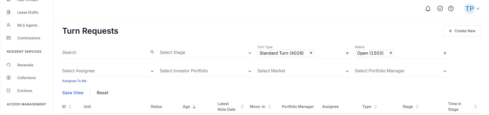
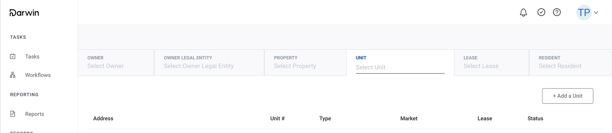
Attempt one: research said one thing, the room wanted Ramp
I ran the initial research with a junior designer: a current-state study of internal operators, pattern exploration across comparable products, and a proposal that was modest, learnable, and shaped around operator mental models and engineering effort.
The proposal was overruled in favor of the Ramp-style combined field. It shipped only inside the Acquisition Portal, and when that project was shelved, the pattern died with it. The pitfalls we had flagged were real: every click in a multi-select closed the menu, real-time filtering lagged at our volumes, and the mental model was foreign to operators.
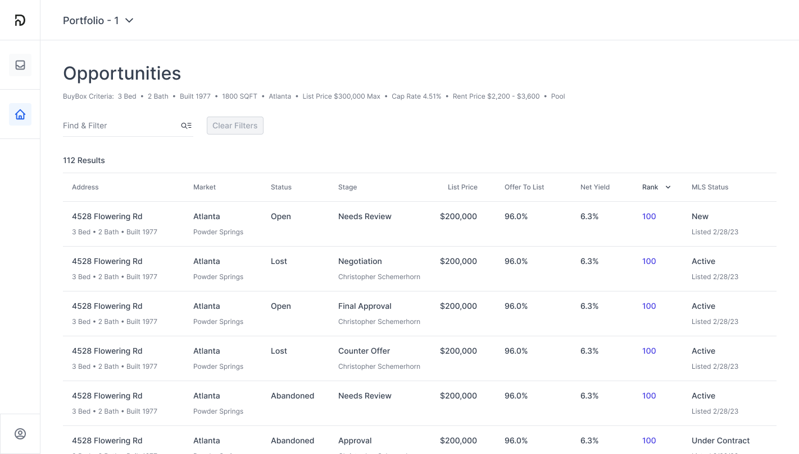
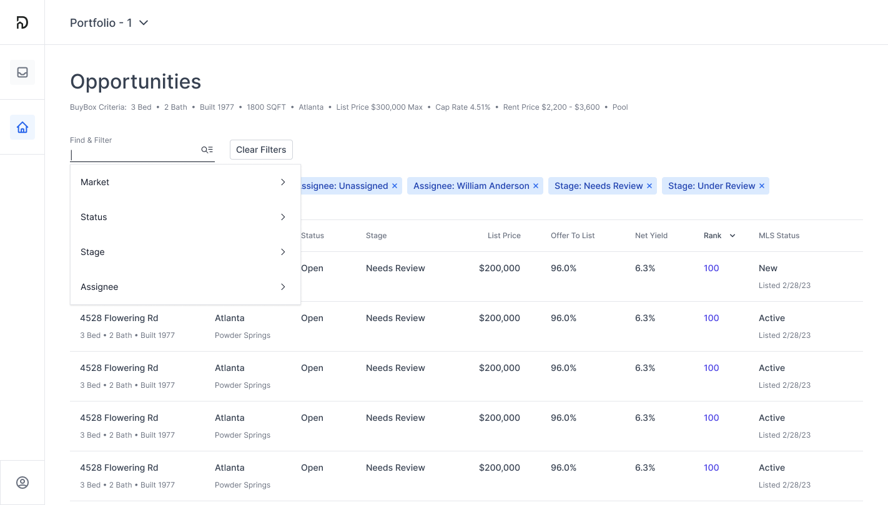
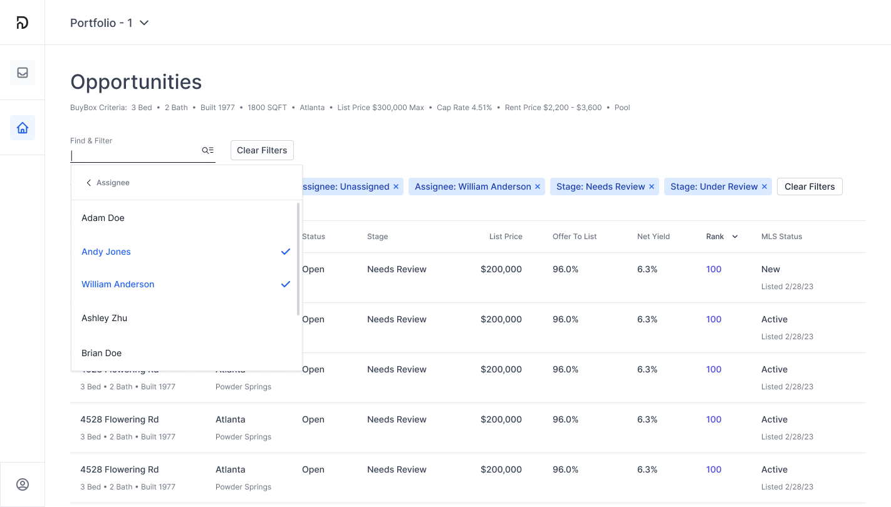
One piece of it was worth keeping. The filter pills were my design, and when the problem came back around I brought them with me. Everything else we built and tested fresh.
Attempt two: the problem came back with leverage
Accounts Payable was drowning. More properties under management made the missing filters actively painful, especially reconciliation tied to month-end close: real operational pain, on a clock, every month. The org had also changed. The Head of Design had left, a new PM was willing to own the initiative and advocate for design, and we reported directly to the Head of Product.
Alignment before pixels: we re-raised the three Ramp pitfalls and got explicit sign-off on direction first. Leadership was frustrated it was not going Ramp-ward, but understood they were not the main users.
Research: two concepts, four operators, scripted tasks
A newly hired senior designer and I sketched separately across modals, slide-out panels, and large dropdowns, brought the work to critique, and landed on two concepts strong enough to test. We tested with four real operators, two from Accounting and two from Leasing, on scripted tasks: applying filters, creating a view, setting a default, editing applied filters, saving to an existing view.
A moment I'd flag: mid-study, the senior designer was iterating between sessions and showing different tweaks to different participants. I pulled them aside and we agreed to freeze the prototype for the remaining testers. Protecting test fidelity beat incremental visual progress, and it was an early calibration moment for someone new to the team.
What the Research Surfaced
- Users were building their own view system out of browser tabs, and losing them constantly.
- Applied filters must stay visible: people forgot what they had selected.
- Filters themselves need search: Owners, Vendors, and Portfolios were huge lists.
- Filters reset when navigating away, so operators re-applied everything each time they came back.
- Frontline wants one default, managers want many: views are role-shaped, and a default is a property of any view, not a separate special view.
A short survey of thirteen operators backed the last one up: a saved default view beat reopening the last applied view, better than half to under four in ten.
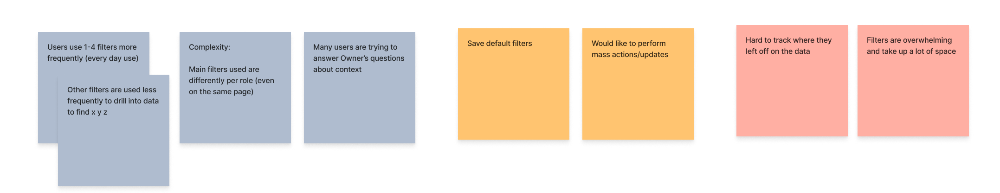
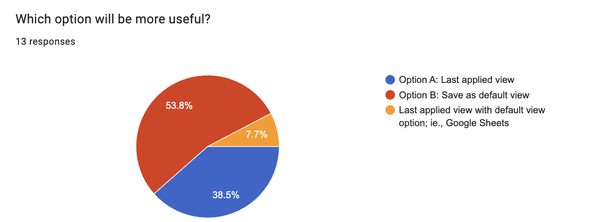
What Shipped
Bills 2.0: filter pills with counts, an all-filters menu, and saved views that stick. The interactions we fixed, deliberately, one by one:
- Multi-select stays open: checkboxes, not one-click-and-close.
- Apply shows its consequences: the result count sits on the button before you commit.
- Edit from the pill: applied filters are interactive, not just labels.
- Built to scale with the page: counts rather than values in pills, +N overflow, search inside big filters. One chip per value had already filled the row at four filters, so pills count instead of naming.
- Views that stick: a default auto-applies on login, and any view is shareable by link.
The persistence decision was the one worth arguing about. We could have remembered whatever filters you left applied, which is the cheaper build and the thing people ask for first. We went with a view you define on purpose instead. A default returns you to your baseline, the search you actually start from, rather than to the tail end of whatever you were digging through yesterday.
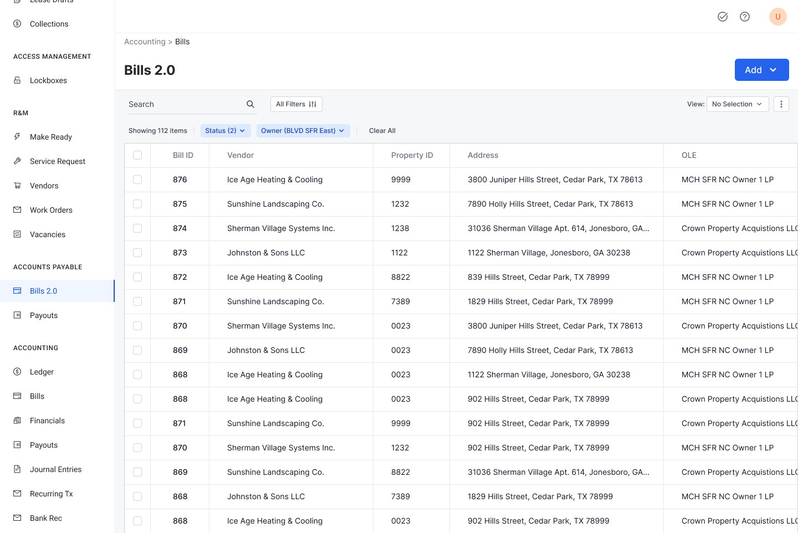
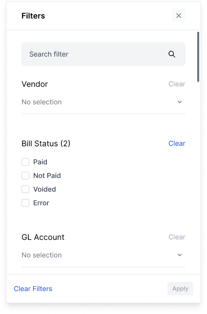
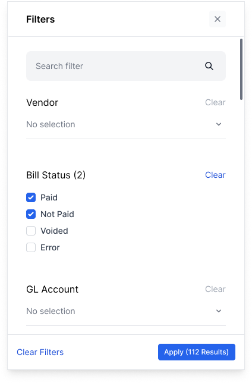
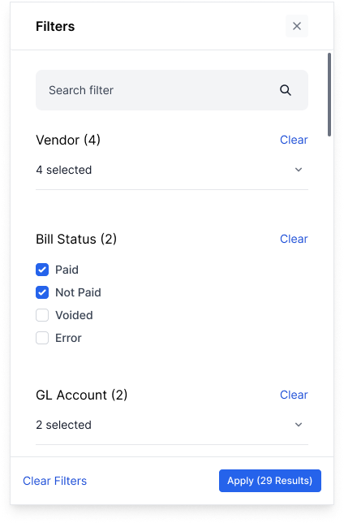
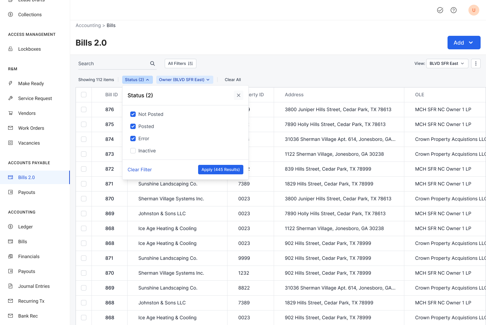
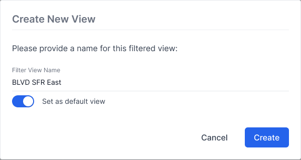
Impact, qualified
The impact is qualitative, specific, and named. Accounts Payable called out the system for keeping reconciliation, and close, on schedule as volume grew. Operators stopped using browser tabs as a saved-view system. One pattern now runs from Bills to Resident CRM to the rest of Origin without reinvention.
What we never got to was the size of it. Moving around Origin without filters, without a view that held, was death by a thousand cuts. Pulling up a lease, finding a resident, running the morning pass over new applicants: each one meant repeating the same handful of actions, or leaving the system entirely to hunt down an ID in a spreadsheet and paste it into the URL. That pattern, or the absence of one, was everywhere. We fixed it where the pain was loudest and the leverage was real, and the volume of it across the rest of the platform stayed where it was, because attention sat on the business model rather than on the systems the operating teams worked in all day.
What I'd do differently: we never instrumented baseline KPIs before shipping. The final decisions doc flagged it; we shipped anyway. Adoption by surface, time-to-saved-view, filter counts: I would define those first now.